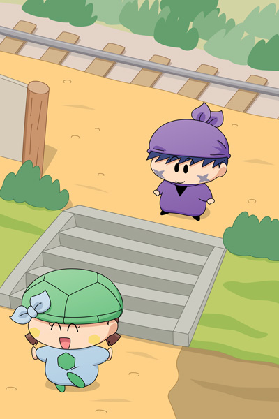

汽車は二人を駅に残して、次の駅へ向けて出発していきました。
カメリ「何とか助かったね～」
サスケ「どうなるかと思ったぜ・・・。
でも、ここはどこなんだぜ？」
カメリ「う～ん・・・。
ねぇ見て、サスケくん～、
あそこに～『ウメの里駅』って～書いてあるよ～」
サスケ「聞いたことない駅だぜ」
カメリ「わたしも～・・・」
サスケ「とにかくミルモの里に戻る汽車に乗らないと・・・」
カメリ「でも・・・ここに書いてある時刻表を見ると、
次の汽車は夜まで来ないみたい～」
サスケ「そんなぁ・・・。
カメリ・・・オイラのせいでごめんだぜ」
カメリ「うぅん、サスケくんの～せいじゃないよ～。
せっかく来たんだから～駅の外に出てみようよ～」
楽しそうな表情で駅の階段を降りていくカメリ。
カメリにつられて、サスケの表情にも笑顔が戻りました。

ウメの里駅―――。
その駅前には小さな家が数軒あるだけで、まさに駅の小ささにふさわしい光景でした。
辺りは静まりかえっていて、人が住んでいる気配も感じられません。
サスケ「何にも無さそうだぜ？」
カメリ「そうだね・・・。
あっ見て！、あのお家の窓から女の人が見てるよ」
やっと次回からサスカメ以外の登場人物が増えます。二人の運命はいかに！？ まぁこの二人のペースなので急展開は予想しにくいですが、どうか暖かく見守っていただければと思います。
適当に背景を描いていたらおかしなパースになってしまいました(T-T)。これまで毎回違う角度でサスカメを描いていましたが、上からの俯瞰はなかなか難しいですね。絵から駅の小ささがいまいち伝わらないなぁ。。
(2012/6/27)